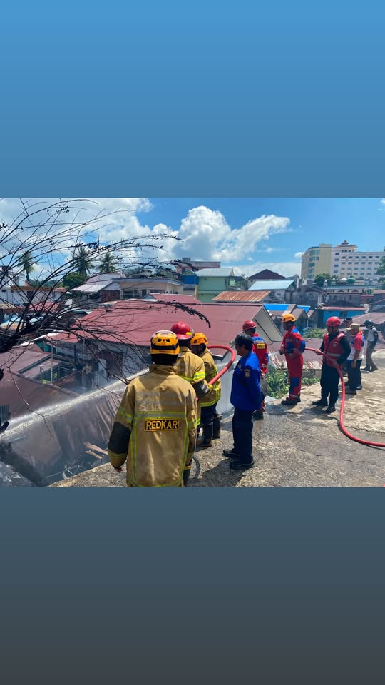

Relawan pemadam kebakaran kota balikpapan adalah organisasi sosial yang dibentuk secara resmi oleh BPBD kota balikpapan.Wadah sukarelawan ini di bentuk untuk membantu petugas pemadam kebakaran dalam mempercepat respons penanganan serta memperkuat pencegahan bencana kebakaran di tingkat kelurahan dan kecamatan

Relawan Pemadam Kebakaran (Redkar) Kota Balikpapan merupakan organisasi kemasyarakatan yang bergerak di bidang penanggulangan kebakaran, penyelamatan (rescue), penanggulangan bencana, serta kegiatan sosial dan kemanusiaan. Dalam menjalankan tugasnya, Redkar berkomitmen memberikan pelayanan secara cepat, profesional, dan mengedepankan nilai-nilai kemanusiaan.
Selain aktif dalam penanganan kebakaran, Redkar juga berpartisipasi dalam kegiatan sosial seperti evakuasi korban kecelakaan, bantuan pada saat bencana, edukasi keselamatan kepada masyarakat, serta mendukung berbagai kegiatan sosial yang membutuhkan keterlibatan relawan.